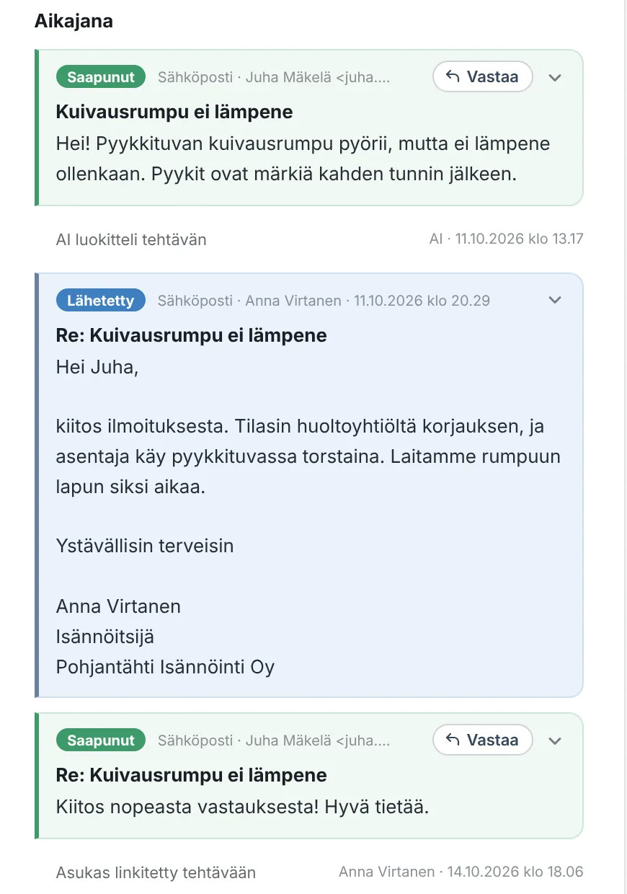

Jokaisesta viestistä tulee tehtävä
Pleissi lukee tulevat viestit suoraan sähköpostista ja tunnistaa asukkaan sekä asunnon viestin lähettäjästä. Koko keskustelu on yhdellä aikajanalla: saapuneet viestit, lähetetyt vastaukset, liitteet ja sisäiset muistiinpanot.
- Saman sähköpostiketjun vastaukset päätyvät samalle tehtävälle
- Asukkaan lähettämät kuvat näkyvät suoraan viestin alla
- Tuntemattoman lähettäjän voi lisätä asukkaaksi yhdellä painalluksella
